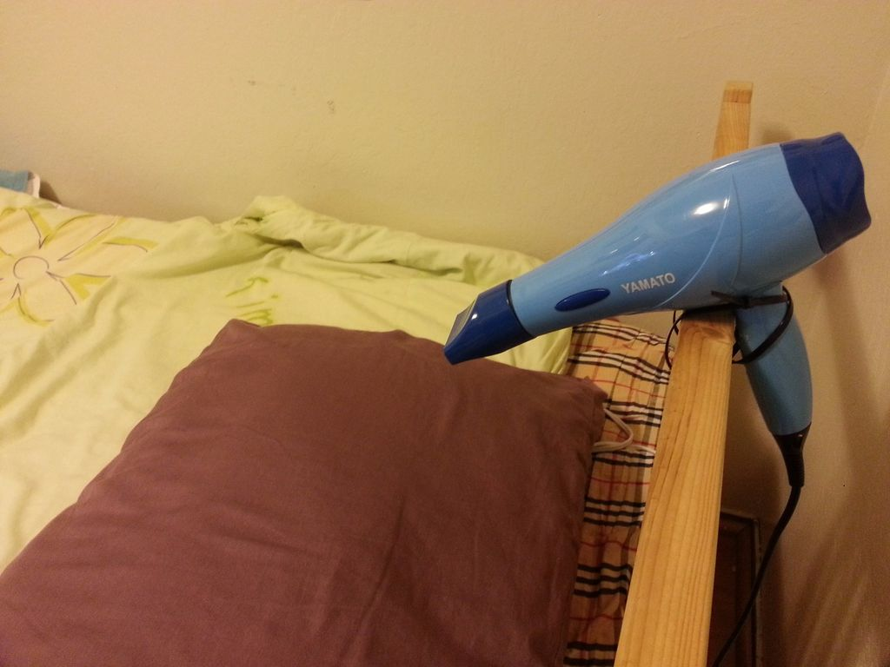

Optical Lab
PMT Photon Counting, Spectra Analysis, Asteroid Astrometry, Doppler radial velocity measurements
Learn MoreTheremin Music Experiments
Building an entirely hardware based implementation of a optical theremin.
Learn More


Blowdryer alarm
A simple way to make an alarm that is sure to make you up in the morning.
(No arduino or electronics required!)
... plus a few ongoing projects at CITRIS Invention Lab, and a bunch of other projects ideas, but not enough time to implement them!!